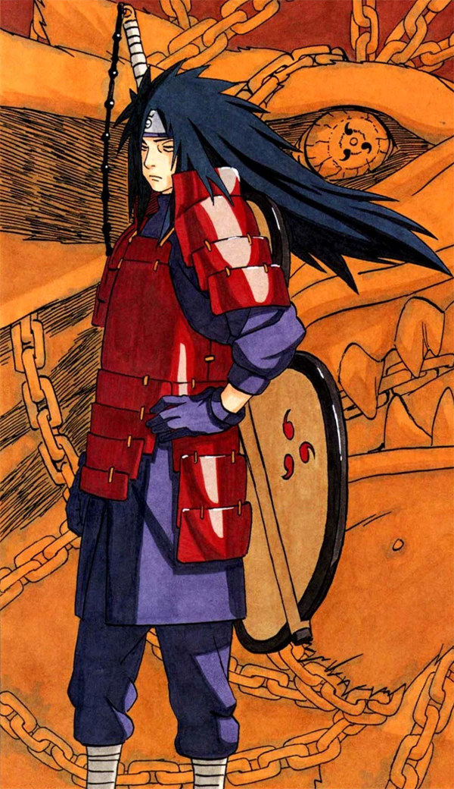

Madara Uchiha
Der legendäre Uchiha-Clanführer und einer der stärksten Shinobi aller Zeiten.
Biografie
- Madara Uchiha wurde im Dorf Konohagakure geboren und war Mitglied des Uchiha-Clans.
- Er war ein hochbegabter Shinobi und zeigte schon in jungen Jahren sein großes Potenzial.
- Madara war ein ehrgeiziger und machthungriger Mann. Er glaubte, dass der Uchiha-Clan der stärkste Clan in Konohagakure sein sollte.
- Als der Dorfgründer Hashirama Senju einen Friedensvertrag mit dem Uchiha-Clan schloss, war Madara nicht einverstanden. Er glaubte, dass der Krieg der einzige Weg sei, um die Vorherrschaft des Uchiha-Clans zu sichern.
- Madara führte den Uchiha-Clan in den Krieg gegen Konohagakure. Der Krieg war lang und verlustreich und endete schließlich mit dem Sieg des Konohagakure. Madara wurde besiegt und galt fortan als tot.
- In Wirklichkeit überlebte Madara den Krieg und begab sich in einen Tiefschlaf. Er wartete auf den Tag, an dem er seine Pläne zur Weltherrschaft umsetzen konnte.
Kräfte
| Kraft | Beschreibung |
|---|---|
| Sharingan | Madaras Sharingan ermöglicht es ihm, die Gedanken seiner Gegner zu lesen und zu kontrollieren. Er kann auch die Techniken seines Gegners kopieren. |
| Rinnegan | Mit dem Rinnegan kann Madara die sechs Pfade des Pain kontrollieren. Diese Pfade sind mächtige Wesen, die Madaras Befehlen folgen. |
| Ninjutsu, Genjutsu, Taijutsu | Madara ist ein Meister des Ninjutsu, Genjutsu und Taijutsu. Er ist in der Lage, mächtige Ninjutsu-Techniken zu wirken, seine Gegner mit Genjutsu zu kontrollieren und sich im Taijutsu mit den besten Kämpfern Konohagakures messen zu können. |
Geschichte
Madara Uchiha wurde in der Ära der sich bekriegenden Staaten geboren und wuchs zusammen mit seinem Bruder Izuna auf. Beide kämpften gegen ihre Rivalen, den Senju-Clan, und entwickelten während ihrer Jugend eine starke Bindung. Madara freundete sich mit Hashirama an, ohne die wahren Identitäten zu kennen. Als die Wahrheit enthüllt wurde, stand Madara vor der Entscheidung zwischen seiner Familie und seinen Träumen. Er entschied sich für den Uchiha-Clan und beendete die Freundschaft mit Hashirama.
Nachdem Madara und Izuna das Mangekyou Sharingan erlangt hatten, wurde Madara Clan-Oberhaupt. In zahlreichen Kämpfen gegen Hashirama setzte Madara sein Mangekyou Sharingan ein und erkannte, dass er bald erblinden würde. Um dem vorzubeugen, nahm er Izunas Augen an sich, erlangte ein permanentes Mangekyou Sharingan und schloss mit Hashirama Frieden. Zusammen gründeten sie Konohagakure, das erste Shinobi-Dorf.
Jedoch geriet Madara in Konflikte und verließ Konoha nach einer gescheiterten Wahl zum Hokage. Er kehrte zurück, forderte Hashirama zu einem Zweikampf heraus und wurde besiegt. Madara überlebte und zog sich zurück.
Im vierten Shinobi-Weltkrieg wurde Madara von Kabuto wiederbelebt und kämpfte gegen die Shinobi-Allianz. Er übertraf alle Gegner und wurde durch eine komplexe Technik unsterblich. Nachdem er zum Jinchuriki des Zehnschwänzigen wurde, kämpfte er gegen Naruto und Sasuke, die die Kraft des Weisen der Sechs Pfade besaßen. Trotz seiner mächtigen Fähigkeiten wurde Madara von den beiden Herausforderern dauerhaft besiegt.
Das Ziel von Madara Uchiha
Madara Uchihas Ziel war es, Frieden zu schaffen und Kriege zu beenden. Durch die Dekodierung des Uchiha-Steins strebte er danach, den "Ultimativen Traum" zu verwirklichen. Dieser Traum beinhaltete die Manifestation des Mondes auf der Erde, um eine Illusionswelt zu erschaffen. In dieser Welt sollten alle Menschen in ihrem eigenen perfekten Traum leben, frei von Schmerz und Konflikten. Madara glaubte, dass dies die einzige Möglichkeit sei, ewigen Frieden zu erreichen und das Leiden der Welt zu beenden.